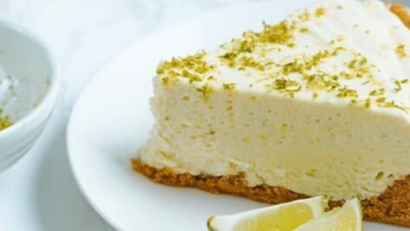

Torta de Limão

Ingredientes
Massa
- 2 xícaras (chá) de farinha de trigo
- 4 colheres (sopa) de manteiga
- Meia lata de creme de leite
- 1 colher (chá) de fermento em pó
Recheio
- 1 leite condensado
- 6 colheres (sopa) de suco de limão
- Meia lata de creme de leite
- 1 colher (sopa) de raspas da casca de limão
Merengue
- 3 claras
- Meia xícara (chá) de açúcar
Modo de Preparo
Massa
- Em um recipiente, peneire a farinha de trigo, faça uma cova no centro e coloque a manteiga, o creme de leite e o fermento em pó.
- Misture-os com as pontas dos dedos, até que a massa solte completamente das mãos.
- Deixe descansar por cerca de 30 minutos na geladeira.
- Em uma superfície limpa, polvilhada com farinha de trigo, abra a massa, forre uma forma de fundo removível (24 cm de diâmetro), fure o fundo com um garfo e asse em forno médio-alto (200°C), preaquecido, por cerca de 20 minutos. Reserve.
Recheio
- Em um recipiente, misture bem o leite condensado com o suco de limão. Incorpore o creme de leite e as raspas de limão.
- Recheie a massa já assada e leve à geladeira por cerca de 30 minutos, para firmar o recheio. Reserve.
Merengue
- Em uma panela, misture as claras e o açúcar e leve ao fogo baixo, mexendo vigorosamente sem parar, por cerca de 3 minutos, tirando a panela do fogo por alguns instantes a cada minuto, continuando a mexer, para não cozinhar.
- Retire do fogo e em uma batedeira, bata por cerca de 5 minutos ou até dobrar de volume.
- Desligue a batedeira, retire a torta da geladeira e cubra-a com o merengue. Retorne a torta ao forno por cerca de 10 minutos, para dourar. Sirva gelada.
Voltar para a lista de receitas